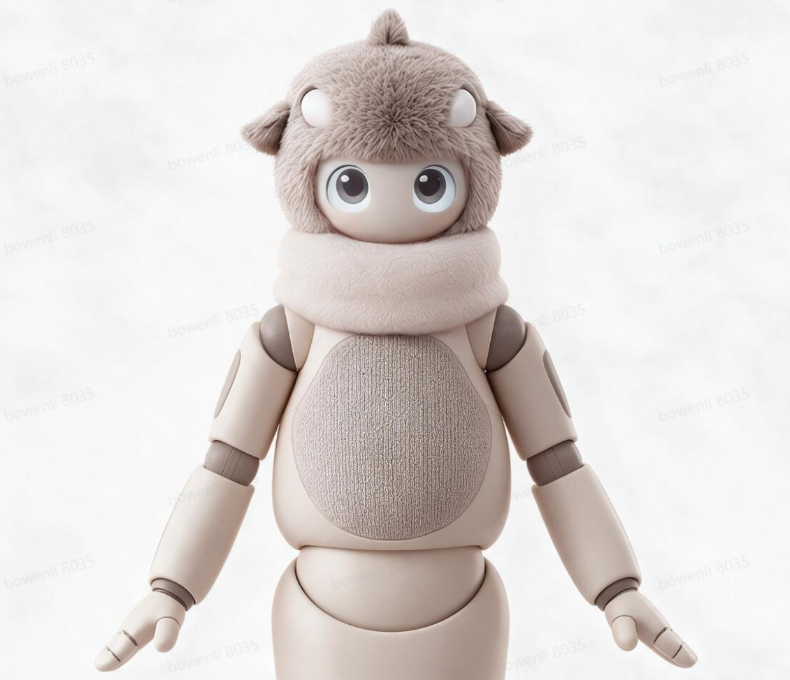

⚙
双眼动画
360 × 360 / 每眼
收起 ↘
森林待机
自然眨眼
左右观察
惊喜聚焦
困倦眯眼
瞳孔震颤
爱心眼
开心笑眼
生气
太热了
困倦
超级开心
委屈流泪
呆萌对眼
自然待机
好奇张望
惊喜睁眼
俏皮眨眼
眨一下
暂停
纯眼睛全屏
机器人效果 ↓
跟随指针
玻璃配色
蓝青
琥珀
紫罗兰
浅金焦糖
茶晶
月光蓝
薄荷玻璃
玫瑰烟晶
方案
森林玻璃
清醒聚焦
夜行观察
手动调整
眼形
面壳宝石
柔和横椭圆
柔和竖椭圆
软杏仁
接近正圆
自定义
整体大小
100%
眼宽
100%
眼高
100%
圆润
84%
柔和边缘
3
双眼距
100%
眼睛倾斜
0
瞳孔大小
100%
虹膜大小
100%
虹膜椭圆
100%
瞳孔椭圆
100%
上半部颜色
下半部颜色
纹理强度
76%
高光强度
98%
虹膜纹理
柔和金丝
云雾
水波
晶点
瞳形
圆形
柔椭圆
竖瞳
行为
温柔待机
抬眼好奇
害羞侧看
开心弯眼
惊讶放大
困倦眨眼
手动注视
看向左右
0
看向上下
0
上眼睑
0%
下眼睑
0%
眼神微动
28%
表情强度
72%
自动转向
双眼同步
眼睛呼吸
28%
瞳孔呼吸
54%
高光漂移
52%
纹理流动
48%
播放速度
100%
眨眼间隔
5.5s
眨眼幅度
100%
眨眼错位
9%
自动眨眼
环境呼吸光
恢复森林玻璃
生成温和变化
下载参数 JSON
导入参数 JSON
时长
4 秒
8 秒
12 秒
帧率
18
24
30
60
布局
左右独立
双眼并排
格式
PNG 序列帧 · ZIP
WebM 视频
PNG 精灵图 · ZIP
当前帧 · PNG ZIP
导出
取消
移到眼睛区域试试 · 空格暂停 · H 隐藏面板
圆外纯黑 · 无边框